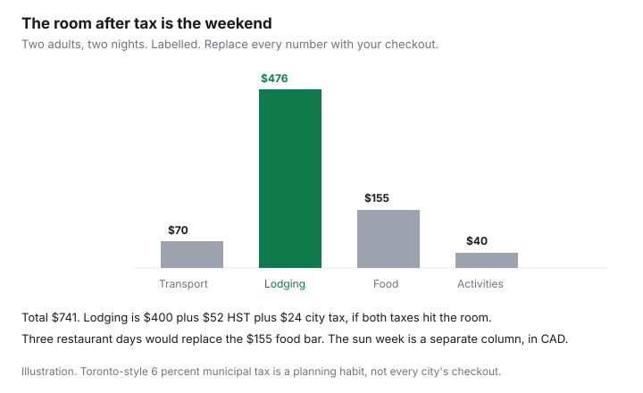

Travel · Canada
Canadian City Staycations That Cost Less Than a Flight: A Weekend Budget Template
A weekend away balloons after the room tax, the parking stall, and three restaurant meals you did not plan as a budget. The flight you did not take is the wrong comparison until you write the staycation as a full invoice and put a sun week beside it, including the vacation days the sun week uses. This is a template for middle-aged households who want a city they can reach without a airport morning, not a list of “best” hotels.
Disclosure: Hotel booking portals are an offer type, not a partnership Saving Optimizer claims to hold. Compare the portal total with booking direct using the direct-versus-portal guide. Dollar rows below are a labelled illustration, not a quote. Tax figures for Toronto were taken from the lodging guide’s 1 Aug 2026 municipal accommodation tax note. Education only.
Key takeaways
- Pick a city you can reach on one tank, a bus, or a train and still have the weekend. The trip fails if Friday night is the drive.
- Price Sunday–Thursday against a Saturday event weekend before you call a rate normal. Festivals and concerts are a different market.
- Lodging is the pre-tax room, then every tax the city adds. A labelled Toronto room of $200 a night for two nights is $400 before tax. At 13% HST and 6% municipal accommodation tax, both applied to the room, that is $476. If HST also applies to the tax, add it. The checkout wins arguments.
- One sit-down meal plus groceries beats a restaurant for every meal. Write the grocery line or it will not happen.
- A sun package can show a lower “per person” thrill and still cost the only vacation days of the season. Convert foreign-currency lines at the Bank of Canada rate, then count days.
- The spreadsheet has four lines: transport, lodging tax-in, food, activities. If a fifth line appears (parking, a show, a birthday dinner), add a row. Do not hide it inside “miscellaneous.”
Pick a city within a tank of gas or a cheap bus/train hop
The staycation that costs less than a flight is usually the city you can reach without a flight. A tank of gas, a bus, or a corridor train is the filter. If the drive starts at 3 p.m. Friday and ends at 9 p.m., you have bought a hotel night in order to start the weekend tired. That is a road trip, and it belongs on the fuel and camping sheet, not in a two-night city budget.
Use a door-to-door test. Home to hotel, not city limit to city limit. Include parking at your building if you keep a car you will not move, and parking at the hotel if the rate is “plus parking.” A train that arrives downtown can beat a cheaper fare into an airport an hour away. The leisure-train comparison, including UP Express when the alternative is a flight, is VIA for vacation trips. Same-day commute math stays under Transportation.
Two adults and a quiet hotel is a different trip from two adults and teenage children who need space. If the party needs two rooms, write two rooms now. The family per-day guide is the longer version of that headcount. A “cheap city” that requires a second room is not cheap.
Off-peak hotel and STR nights (Sun–Thu) vs weekend event spikes
Leisure demand in Canadian cities piles onto Friday and Saturday. A Sunday arrival and a Thursday departure is often the same hotel at a different rate, with the same breakfast and a quieter street. It is not automatically better. It is the comparison you run before you accept the Saturday price as the price of the city.
Event spikes are not a rounding error. A concert, a football weekend, a convocation, or a festival can double a room that looked ordinary on a random Tuesday screenshot. Open the city’s event calendar for your dates before you fall for a rate. If the weekend is the event, pay the spike on purpose and stop hunting a ghost Tuesday rate that is not your trip.
Short-term rentals still owe a cleaning fee, a guest fee, and the same municipal tax conversation as a hotel. The all-in method is the Airbnb versus hotel guide: nights, party size, and whether you will cook. A staycation with a kitchen is how the food section below stays honest. A staycation in a hotel room with a mini-fridge is a restaurant budget unless you planned groceries you can actually eat cold.
Booking portals and the hotel’s own site are both allowed. If the gap is smaller than one free night you will actually use, the direct-versus-portal guide says to book direct. This page does not rank cards, and it does not name a preferred portal. The checkout total, including tax, is the number that enters the spreadsheet.
Free municipal attractions, library passes, and city tourism discount weeks
The activities line should start at zero and earn its way up. Galleries with a free evening, a waterfront walk, a market, and a neighbourhood you do not have at home are the staycation. A paid attraction is a choice, not the definition of having gone.
Many city libraries lend museum passes. Toronto’s program is the Museum + Arts Pass through Toronto Public Library. Other cities use other names, or none. Check the library card you already pay for before you buy two full-price tickets “so the weekend feels like a trip.” If your library has no pass, the line stays zero. Do not invent a discount a city does not offer.
Tourism discount weeks — a restaurant week, a museum week, a hotel package the city tourist office actually publishes — are worth a look after the room is priced, not before. A “package” that bundles a room you did not want with a breakfast you will skip is not a discount. Add the pieces. If the sum is lower than buying the room alone plus the one activity you will use, take it. If you will only use the room, buy the room.
Food budget: one nicer meal + groceries vs restaurant-every-meal
Three restaurant meals a day for two people is how a $400 room becomes an $800 weekend. The rule that holds for this household: one nicer meal, booked or at least named, and groceries for the rest. Breakfast from a market, lunch from the same bag, one dinner you will remember.
Write the nicer meal as a ceiling, not a wish. If $90 before tip is the dinner, the spreadsheet says $90 plus the tip rate you actually leave. Groceries need a store you can reach without a second taxi. A hotel desk that says “there is a grocery eight minutes away” is a plan. A hotel with no store in walking distance means the grocery line becomes convenience-store prices or more restaurants. Change the hotel or change the food line. Do not keep both fantasies.
Alcohol is its own row if it is part of the weekend. Hiding two bottles inside “groceries” is how the template lies. Coffee is the same, smaller. If you want the number to be true on Sunday night, name the rows on Friday morning.
Compare to a sun package after FX and travel days lost
A staycation is not automatically the frugal choice. A sun package in the shoulder can be a smaller cheque than a long weekend of downtown rooms. The comparison is only fair if both sides are in Canadian dollars and both sides count days.
Foreign-currency lines convert at the Bank of Canada daily average, which is an indicative rate, not the rate your card will give you. On 23 Sep 2026 the US dollar rate was 1.4096 Canadian dollars. A US-dollar resort line of $1,000 is about $1,410 before a card markup. The markup method, including a 2.5% illustration, is the FX guide. Do not compare a CAD staycation with a USD package sticker.
Then count days. A Saturday-to-Monday city trip uses a weekend many households already had. A seven-day sun trip uses the weekend plus vacation days, plus the two travel days that are not really days on the beach. If those vacation days are the only ones you will get this year, the sun week’s “deal” is spending them. If you have the days and you want the week, price the package with the Mexico package guide or the Caribbean guide and put travel medical beside it, not inside it. The medical decision stays on the Insurance page, provincial gaps abroad.
The staycation wins on dollars when its four-line total is lower and you did not need the vacation days. The sun week wins when you wanted those days gone and the all-in CAD figure, after FX and the medical premium, is the trip you will actually take. A middle number — a city weekend that costs almost as much as the package and uses none of the longing for a week away — is the one to cancel.
Template spreadsheet: transport, lodging tax-in, food, activities
Four lines. One column for the trip you can take this month. No “per person” until the total exists, because a room does not divide the way a dinner does.
| Line | What goes in it | Labelled example |
|---|---|---|
| Transport | Fuel or train or bus, both ways, plus parking at the hotel if it is extra. Not the commute sheet. | $70 |
| Lodging, tax-in | Room rate times nights, then HST or GST and any municipal tax. Two nights at $200. | $400 + $52 HST + $24 MAT = $476 |
| Food | One nicer meal plus groceries. Tip on the meal if you tip. | $90 dinner + $65 groceries = $155 |
| Activities | Only what you will do. Library passes at $0. One paid ticket if you named it. | $40 |
| Total | Sum. Then divide by two if you want a per-person figure. Do not divide the room first and forget tax. | $741 |

$741 for two adults and two nights is $370.50 a person before you decide the sun week is “only a bit more.” Pull the sun quote in CAD, add the medical premium, and count the days. If the city weekend is the trip, book the lodging number you just wrote, not a prettier room that breaks the line. If an event weekend replaces the $200 rate with $320, redo the tax on $640 of room, not on $400. The template is a calculator. It is not a promise that Tuesdays are available on your anniversary.
Sources & date stamps
- Bank of Canada daily average exchange rates — US dollar 1.4096 Canadian dollars on 23 Sep 2026. Indicative only. Read 24 Sep 2026.
- Lodging tax method and Toronto’s 6% municipal accommodation tax from 1 Aug 2026 — used as published on this site’s all-in lodging guide. Confirm the checkout.
- Toronto Public Library Museum + Arts Pass — named as the example of a library museum pass. Other cities differ. Confirm locally.
Frequently asked questions
How do I keep a city weekend cheaper than a flight?
Stay inside a tank of gas or a bus or train hop, price Sunday-to-Thursday against your real dates, and add municipal tax to the room before you compare. A labelled two-night room at $200 is $476 after 13% HST and 6% Toronto accommodation tax if both apply to the room. Then add transport, food, and activities.
Are weekday hotel rates always the way to book?
They are the comparison, not the prize. Friday and Saturday, and any festival or concert weekend, are a different market. If your dates are the event, pay that rate on purpose. If your dates can move, price both and keep the lower checkout that you will still enjoy.
What should the food budget be?
One nicer meal plus groceries, with a store you can walk to. In the labelled sheet that is $90 plus $65. Three restaurant meals a day will erase the reason you skipped the flight. Put alcohol on its own row if it is part of the trip.
When does a sun package still win?
When the package, converted at the Bank of Canada rate and written in Canadian dollars, plus travel medical, is the trip you want and you can spare the vacation days. A weekend staycation does not spend those days. The US dollar rate on 23 Sep 2026 was 1.4096. Card markups are extra. Medical coverage stays on the Insurance guide.